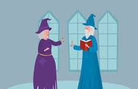

By Edmund Mulligan, CITP MBCS
edmund@edmundmulligan.name
Developed for the Kingston University Code Dojo club, 2025
Welcome to the world of web development! Here, you will learn the art of creating stunning websites and applications.
These exercises are an introduction to web development using HTML. There is far more to web development than we will cover in these exercises, but they will give you a good start. You will learn how to create web pages using HTML, and how to add images, lists, tables, and hyperlinks to your pages. You will also change how web pages look using syles and allow people to interact with your pages using JavaScript.
These exercises are designed to be done in a web browser and a text editor. You will need to download the files from GitHub and open them in your web browser. You will also need to open the files in a text editor so you can edit them. You can use any web browser and any text editor you like, but we recommend using Mozilla Firefox and Visual Studio Code.
To do these exercises you will need:
When you browse to GitHub, click on the green Code button and then select Download ZIP. This will put a zipped copy of this tutorial in your Downloads folder. Copy the file to your home directory and unzip it. You can do this by right-clicking on the file and selecting Extract All. This will create a folder called Witches-and-Wizards in your home directory.
Open the folder and double-click on the index.html file. This will open this file in your web browser.
To edit the files, start Visual Studio Code and open the Witches-and-Wizards folder. You can do this by clicking on File, then Open Folder, and selecting the Witches-and-Wizards folder. You should see a list of files and folders in the left-hand pane. Click on index.html to open it in the editor.
When you are ready, explore the exercises:
Once you have finished the exercises, check out the following resources to explore writing websites further: